Lacourte Raquin & Associés
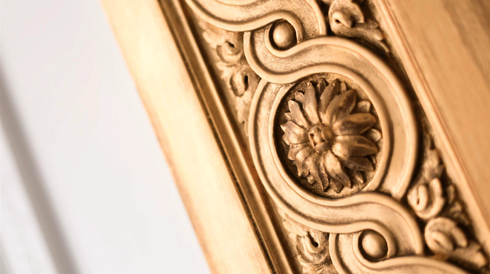
July 2021
Founded in Paris in 1993, Lacourte Raquin & Associés is a law firm that covers the main areas of business law: mergers and acquisitions, real estate, taxation, financing, public business law, town planning, asset management and litigation.
Lacourte Raquin & Associés brings together a team of professionals who have recognized expertise in their respective fields of specialization.
-
Creative Director
Emmanuel Cruellas
-
Project Manager
Morgane Urbain
-
Development
Loup-Rodolphe Thibault
-
Agency
Bonhomme
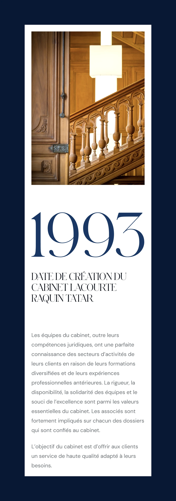
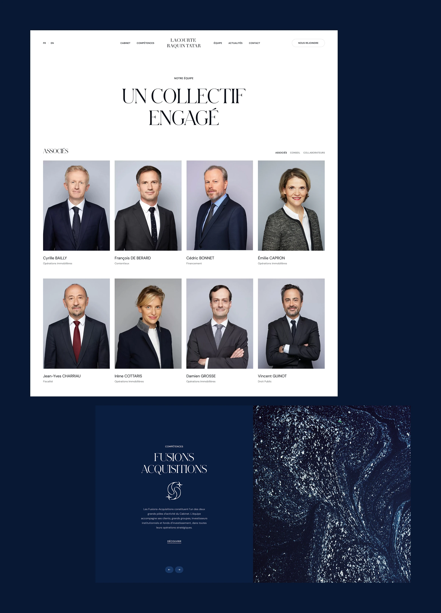
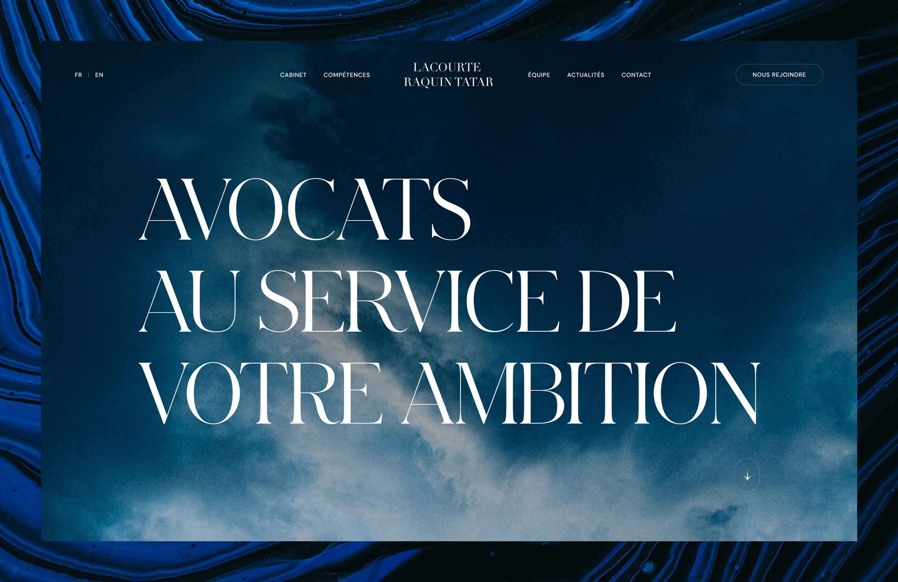
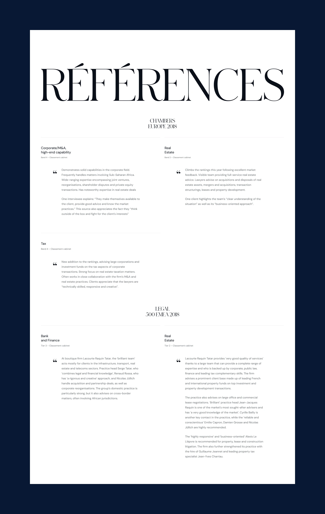
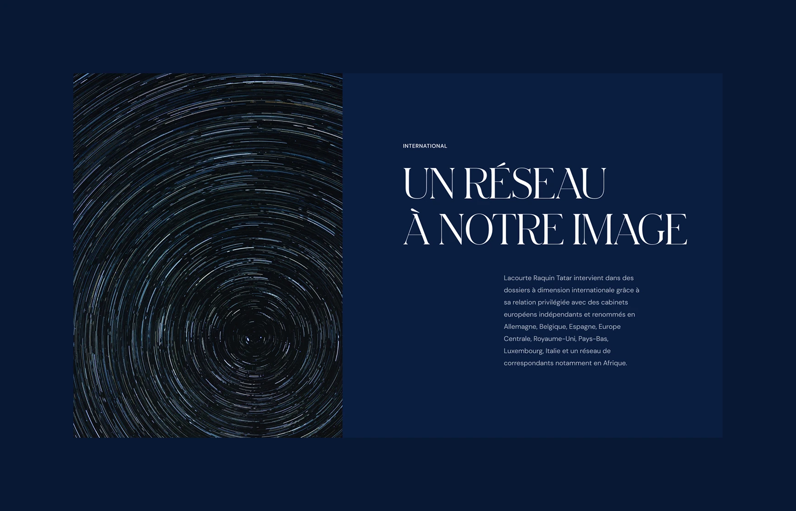
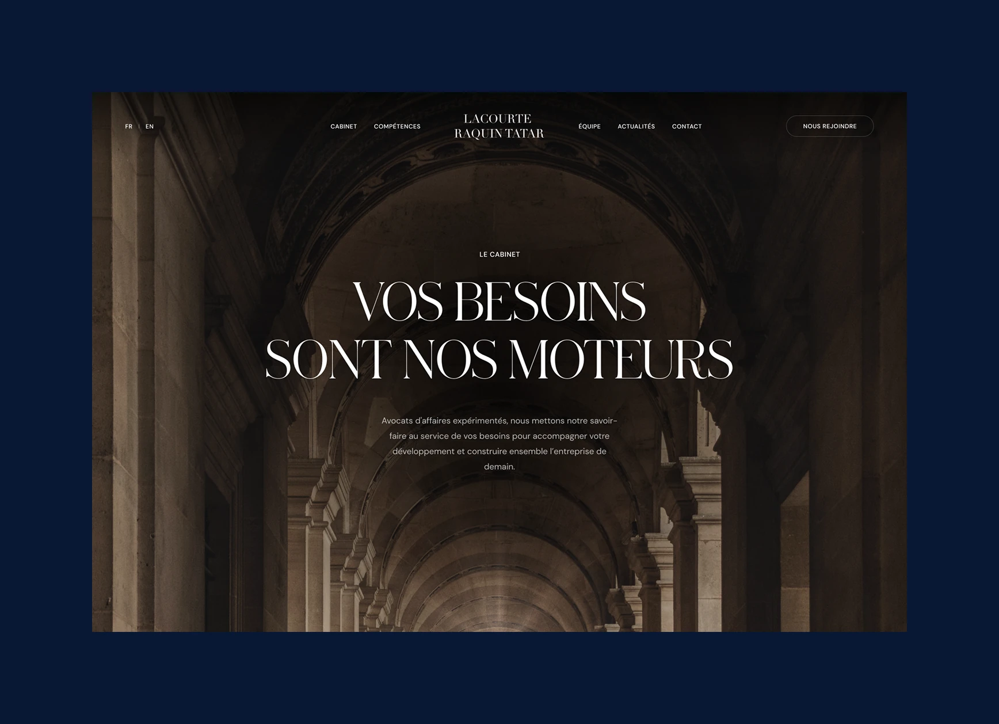
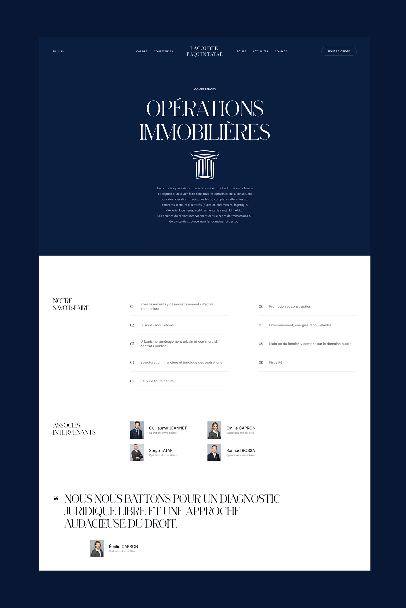
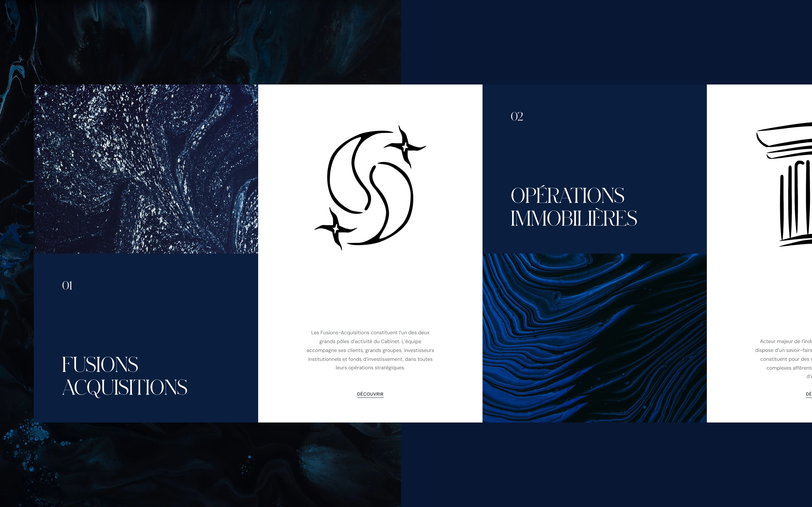
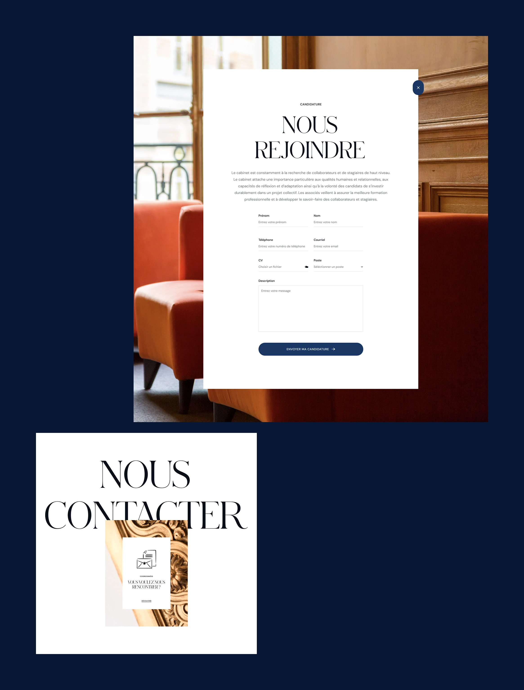
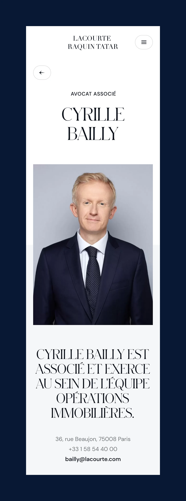
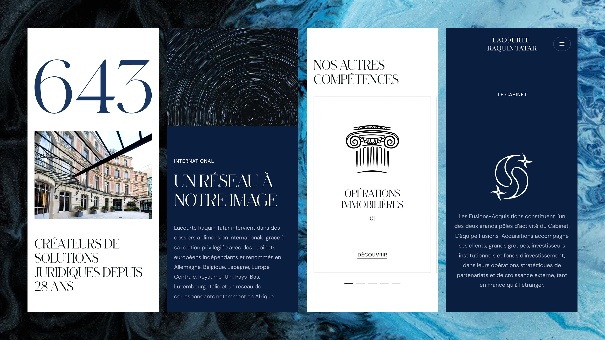
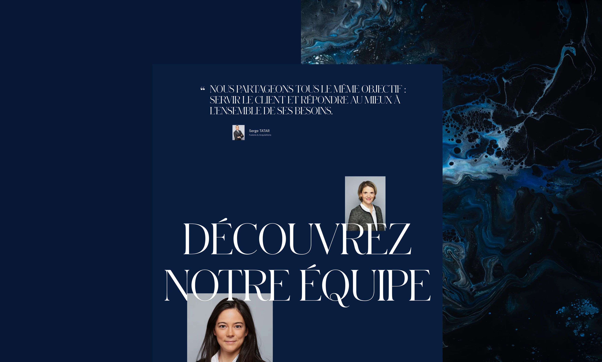
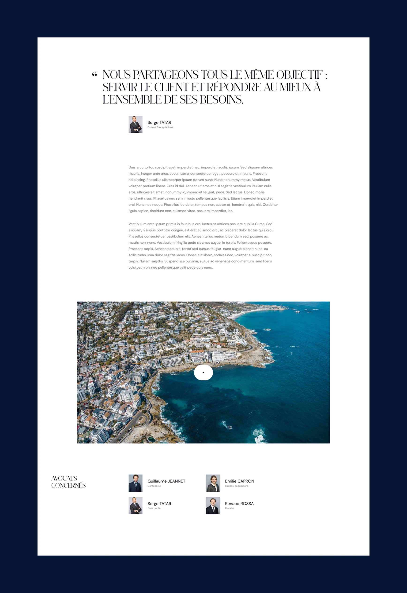
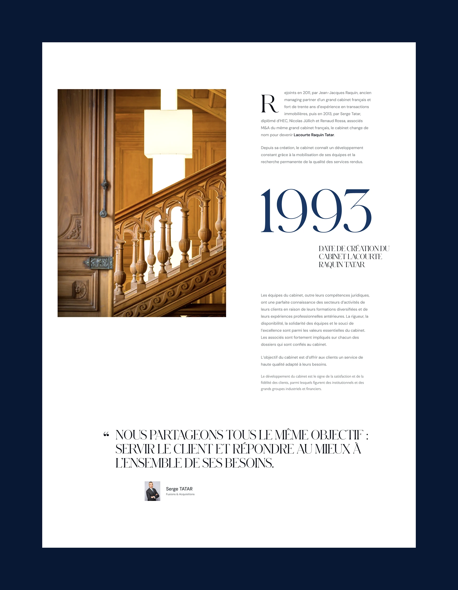
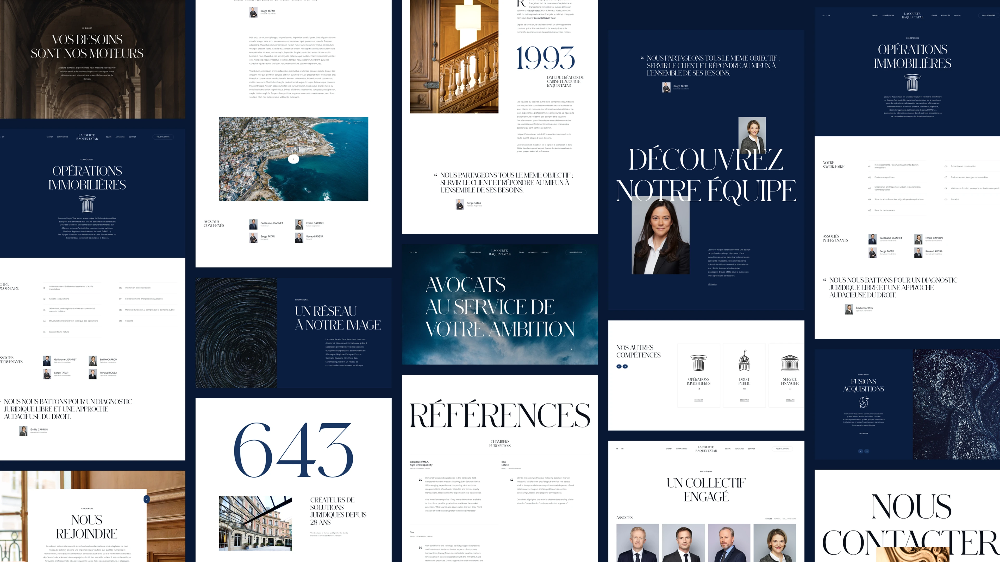